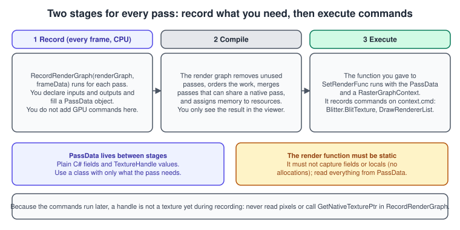
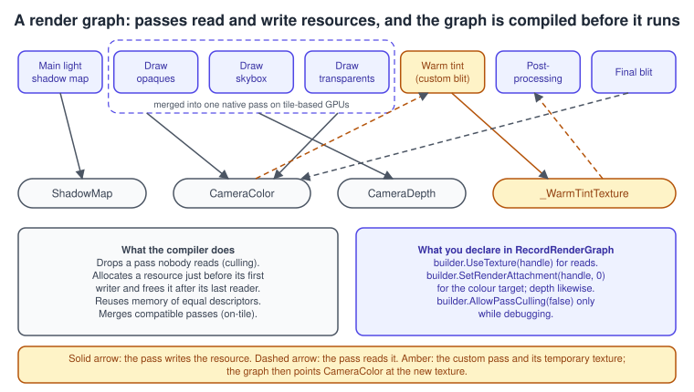
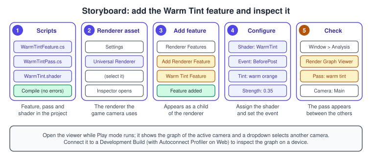

Render Graph and Custom Passes
|
This content was generated with the assistance of AI and should be verified against the official documentation before being relied on in production. |
A URP frame is a sequence of passes: shadow maps, opaque objects, skybox, transparents, post-processing. Sooner or later a project needs one more: a warm tint while the desk lamp is on, an outline around the book under the cursor, a depth-based fog. Unity 6 builds these as passes of a render graph, a system that knows which textures every pass reads and writes, so it can cull unused work, reuse memory and merge passes on mobile GPUs. This page shows how a pass is written, how it is inserted into the frame, and how to see what URP did with it, with two complete Bookshelf examples.
The facts were checked in November 2026. The page documents Unity 6.3 LTS (6000.3, URP 17.3); the old way of writing passes with Execute and command buffers (the URP "Compatibility Mode") was removed in Unity 6.4, so
every custom pass written today is a render graph pass. The examples need the URP 3D template of the Bookshelf (see URP in Depth) and run on every platform that has a URP renderer.
For a pass that needs no code at all, URP also ships the Full Screen Pass Renderer Feature, described below. The general idea of a post-processing chain is in
Transparency, Blending and Post-Processing; the shaders the passes use are in
Shader Graph and HLSL.
What the render graph is
The render graph system is a set of APIs from the Scriptable Render Pipeline Core package. You use it to write a Scriptable Render Pass: you tell URP which textures the pass uses (the recording stage) and which graphics commands to run with them (the execution stage). URP then merges your pass into its own internal graph, the sequence of passes it steps through each frame.

Because it sees the whole frame, the graph can:
-
avoid allocating resources the frame does not use;
-
remove a pass whose output the final frame does not use;
-
reuse memory when a texture has the same properties as an earlier one that is no longer needed;
-
synchronise the compute and graphics GPU queues automatically when compute shaders are used;
-
on tile-based GPUs, merge several passes into one native render pass, which keeps the textures in tile memory instead of copying them out, and uses less memory bandwidth and time.
Resources are not allocated by you. You ask the graph for a handle (a TextureHandle, a BufferHandle, a RendererListHandle), and the graph allocates the memory just before the first pass that writes it and
releases it after the last pass that reads it. There are two kinds. An internal resource is created inside a pass with renderGraph.CreateTexture; its lifetime is the graph’s, so you cannot keep it between frames or cameras.
An imported resource comes from outside, such as the camera back buffer or a texture you keep for several frames; you import it with renderGraph.ImportTexture, and its lifetime is yours.

The parts of a custom pass
A custom effect is two classes and, usually, a shader.
| Piece | Role |
|---|---|
|
a |
|
the pass itself; its |
|
a small class holding the handles and values the render function needs |
render function |
a static method that receives the |
shader or compute shader |
the work the commands run |
The feature’s methods are called at fixed moments. Create runs when the feature loads, when you enable or disable it and when you change a property in its Inspector: create the pass and any materials there.
AddRenderPasses runs every frame, once for each camera: decide whether to enqueue the pass and call renderer.EnqueuePass, but do not create objects there. Dispose is where you free materials and handles.
Source: Unity Manual: Inject a render pass with a Scriptable Renderer Feature in URP, Unity Manual: Write a render pass using the render graph system in URP
Pass types
The builder you get from the graph decides what the pass may do, and so how well the graph can optimise it.
| API | Use |
|---|---|
|
the normal pass: draws with raster commands into attachments you declare with |
|
a helper that generates the pass for a blit from one texture to another with a material; no pass data to write |
|
runs a compute shader; the graph synchronises the compute and graphics queues |
|
gives access to the full |
Where the pass runs: injection points
renderPassEvent takes a RenderPassEvent value. The ones you use most are BeforeRenderingOpaques, AfterRenderingOpaques, AfterRenderingSkybox, AfterRenderingTransparents,
BeforeRenderingPostProcessing and AfterRenderingPostProcessing. A pass has read and write access to all buffers at its injection point; the full list, in order, is in the table on
URP in Depth. Pick the point from the effect:
-
an effect that must be lit and tone-mapped like the scene (a glow on a book) goes before post-processing, so bloom and tone mapping apply to it;
-
an effect that changes the final look of the image (a colour wash, a vignette) goes before or after post-processing depending on whether it should be graded;
-
an effect on the UI or a debug overlay goes
AfterRenderingPostProcessing.
Example 1: a warm tint with AddBlitPass
The desk lamp makes the shelf look warm. This pass blits the colour of the camera through a small shader that tints and vignettes it. AddBlitPass creates the raster pass for you, so the code is mostly resource handling.
The shader
The shader is a URP blit shader: Blit.hlsl supplies the vertex function Vert, the Varyings structure and the source texture _BlitTexture.
Shader "Bookshelf/WarmTint"
{
SubShader
{
Tags { "RenderType" = "Opaque" "RenderPipeline" = "UniversalPipeline" }
ZWrite Off
Cull Off
ZTest Always
Pass
{
Name "WarmTint"
HLSLPROGRAM
#pragma vertex Vert
#pragma fragment Frag
#include "Packages/com.unity.render-pipelines.universal/ShaderLibrary/Core.hlsl"
#include "Packages/com.unity.render-pipelines.core/Runtime/Utilities/Blit.hlsl"
float4 _Tint;
float _Strength;
float4 Frag(Varyings input) : SV_Target
{
UNITY_SETUP_STEREO_EYE_INDEX_POST_VERTEX(input);
float2 uv = input.texcoord;
float4 color = SAMPLE_TEXTURE2D_X(_BlitTexture, sampler_LinearClamp, uv);
// Darken the corners a little.
float2 centred = uv - 0.5;
float vignette = saturate(1.0 - dot(centred, centred) * 1.6);
float3 warm = color.rgb * _Tint.rgb;
color.rgb = lerp(color.rgb, warm, _Strength) * lerp(0.75, 1.0, vignette);
return color;
}
ENDHLSL
}
}
}You can create a starting shader with Assets > Create > Shader > SRP Blit Shader, or build the effect in Shader Graph (see Create a low-code custom post-processing effect).
The feature and the pass
using System;
using UnityEngine;
using UnityEngine.Rendering;
using UnityEngine.Rendering.RenderGraphModule;
using UnityEngine.Rendering.RenderGraphModule.Util;
using UnityEngine.Rendering.Universal;
namespace Bookshelf.Rendering
{
/// <summary>Renderer Feature that tints and vignettes the camera colour.</summary>
public sealed class WarmTintFeature : ScriptableRendererFeature
{
[Serializable]
public sealed class Settings
{
public Shader shader;
public RenderPassEvent renderPassEvent = RenderPassEvent.BeforeRenderingPostProcessing;
[ColorUsage(showAlpha: false)]
public Color tint = new Color(1f, 0.82f, 0.6f);
[Range(0f, 1f)]
public float strength = 0.35f;
}
public Settings settings = new Settings();
private Material material;
private WarmTintPass pass;
public override void Create()
{
// Called on load, on enable or disable and when a property changes.
DisposeMaterial();
if (settings.shader == null)
{
pass = null;
return;
}
material = CoreUtils.CreateEngineMaterial(settings.shader);
pass = new WarmTintPass(material)
{
renderPassEvent = settings.renderPassEvent,
};
}
public override void AddRenderPasses(ScriptableRenderer renderer, ref RenderingData renderingData)
{
// Called every frame for every camera: no allocations here.
if (pass == null) return;
if (renderingData.cameraData.cameraType != CameraType.Game) return;
pass.Setup(settings.tint, settings.strength);
renderer.EnqueuePass(pass);
}
protected override void Dispose(bool disposing)
{
DisposeMaterial();
}
private void DisposeMaterial()
{
CoreUtils.Destroy(material);
material = null;
}
private sealed class WarmTintPass : ScriptableRenderPass
{
private const string PassName = "Bookshelf Warm Tint";
private static readonly int TintId = Shader.PropertyToID("_Tint");
private static readonly int StrengthId = Shader.PropertyToID("_Strength");
private readonly Material material;
public WarmTintPass(Material material)
{
this.material = material;
// The pass samples the active colour, so URP must render to a texture,
// not directly to the back buffer.
requiresIntermediateTexture = true;
}
public void Setup(Color tint, float strength)
{
material.SetColor(TintId, tint);
material.SetFloat(StrengthId, strength);
}
public override void RecordRenderGraph(RenderGraph renderGraph, ContextContainer frameData)
{
UniversalResourceData resourceData = frameData.Get<UniversalResourceData>();
// Nothing to read if URP renders straight to the back buffer.
if (resourceData.isActiveTargetBackBuffer) return;
TextureHandle source = resourceData.activeColorTexture;
// A destination with the same size and format as the source.
TextureDesc descriptor = renderGraph.GetTextureDesc(source);
descriptor.name = "_BookshelfWarmTintTexture";
descriptor.clearBuffer = false;
TextureHandle destination = renderGraph.CreateTexture(descriptor);
var parameters = new RenderGraphUtils.BlitMaterialParameters(source, destination, material, 0);
renderGraph.AddBlitPass(parameters, PassName);
// Later passes read the tinted texture: no blit back is needed.
resourceData.cameraColor = destination;
}
}
}
}Source: Unity Manual: Blit using the render graph system in URP, URP 17.3 scripting API: ScriptableRenderPass
Points worth noticing:
-
resourceData.cameraColor = destinationreplaces the camera colour in the frame data, so the passes after yours (post-processing, the final blit) read your texture. Blitting back into the original would add a second pass for nothing. -
requiresIntermediateTextureis the documented way to make URP render to a texture so the pass can sample it. Without it the pass may find the back buffer as the active target. -
The material is created once in
Createand its values are set inSetupeach frame; creating a material inAddRenderPasseswould allocate every frame. -
AddBlitPasscan be replaced byAddCopyPasswhen the material is a plain copy, which lets URP read the framebuffer from on-chip memory. Since Unity 6.3 the blit helpers can also blit straight to the back buffer and blit depth, which makes full-screen effects simpler.
Adding the feature to the renderer

-
Save
WarmTintFeature.csandWarmTint.shaderin the project and wait for the compile to finish. -
In the Project window, select the Universal Renderer asset that the game camera uses (a child of the URP asset’s Renderer List). The Inspector shows the renderer properties.
-
In the Inspector, select Add Renderer Feature, then choose Warm Tint Feature in the list. Unity adds it as a child item of the renderer.
-
Assign the Warm Tint shader to Shader in the feature, and check Render Pass Event and Strength.
-
Enter Play mode, then open Window > Analysis > Render Graph Viewer and look for the Bookshelf Warm Tint pass between the others.
Source: Unity Manual: Add a Renderer Feature to a URP Renderer, Unity Manual: Analyze a render graph in URP
The renderer must be the one in use. A project with several renderers needs the feature on each one that should show the effect, and a camera chooses its renderer in its Rendering section.
Example 2: a glow for the selected book with a RendererList
A blit changes the whole image. To change how some objects look, draw them again: this pass takes every renderer on a Selected layer and draws it once more with an override material that adds a rim glow. The pass draws into the camera colour and depth that already exist, with a depth test but no depth write, so the glow sits on the book.
Shader "Bookshelf/SelectedGlow"
{
Properties
{
_GlowColor ("Glow colour", Color) = (1, 0.7, 0.2, 1)
_Intensity ("Intensity", Range(0, 4)) = 1.5
}
SubShader
{
Tags { "RenderType" = "Opaque" "RenderPipeline" = "UniversalPipeline" }
Pass
{
Name "SelectedGlow"
Tags { "LightMode" = "UniversalForward" }
Blend One One
ZWrite Off
ZTest LEqual
HLSLPROGRAM
#pragma vertex vert
#pragma fragment frag
#include "Packages/com.unity.render-pipelines.universal/ShaderLibrary/Core.hlsl"
CBUFFER_START(UnityPerMaterial)
half4 _GlowColor;
half _Intensity;
CBUFFER_END
struct Attributes
{
float4 positionOS : POSITION;
float3 normalOS : NORMAL;
};
struct Varyings
{
float4 positionCS : SV_POSITION;
float3 normalWS : TEXCOORD0;
float3 viewDirWS : TEXCOORD1;
};
Varyings vert(Attributes input)
{
Varyings output;
VertexPositionInputs positions = GetVertexPositionInputs(input.positionOS.xyz);
output.positionCS = positions.positionCS;
output.normalWS = TransformObjectToWorldNormal(input.normalOS);
output.viewDirWS = GetWorldSpaceViewDir(positions.positionWS);
return output;
}
half4 frag(Varyings input) : SV_Target
{
half3 normal = normalize(input.normalWS);
half3 view = normalize(input.viewDirWS);
// Strong where the surface turns away from the viewer: a rim.
half rim = pow(1.0 - saturate(dot(normal, view)), 3.0);
return half4(_GlowColor.rgb * _Intensity * rim, 1.0);
}
ENDHLSL
}
}
}The feature uses the RendererListHandle API: build a RendererListParams from the cull results, the drawing settings and a filter, turn it into a handle, declare it with UseRendererList, and draw it with DrawRendererList in the render function.
using UnityEngine;
using UnityEngine.Rendering;
using UnityEngine.Rendering.RenderGraphModule;
using UnityEngine.Rendering.Universal;
namespace Bookshelf.Rendering
{
/// <summary>Redraws renderers on the chosen layers with a glow material.</summary>
public sealed class SelectedGlowFeature : ScriptableRendererFeature
{
public Material glowMaterial;
public LayerMask layers;
public RenderPassEvent renderPassEvent = RenderPassEvent.AfterRenderingTransparents;
private SelectedGlowPass pass;
public override void Create()
{
pass = new SelectedGlowPass
{
renderPassEvent = renderPassEvent,
};
}
public override void AddRenderPasses(ScriptableRenderer renderer, ref RenderingData renderingData)
{
if (glowMaterial == null || layers.value == 0) return;
if (renderingData.cameraData.cameraType != CameraType.Game) return;
pass.Setup(glowMaterial, layers);
renderer.EnqueuePass(pass);
}
private sealed class SelectedGlowPass : ScriptableRenderPass
{
// Objects whose shader has this LightMode tag are the ones that can be redrawn.
private static readonly ShaderTagId ForwardTag = new ShaderTagId("UniversalForward");
private Material material;
private LayerMask layerMask;
private sealed class PassData
{
public RendererListHandle rendererList;
}
public void Setup(Material glowMaterial, LayerMask layers)
{
material = glowMaterial;
layerMask = layers;
}
public override void RecordRenderGraph(RenderGraph renderGraph, ContextContainer frameData)
{
UniversalRenderingData renderingData = frameData.Get<UniversalRenderingData>();
UniversalCameraData cameraData = frameData.Get<UniversalCameraData>();
UniversalLightData lightData = frameData.Get<UniversalLightData>();
UniversalResourceData resourceData = frameData.Get<UniversalResourceData>();
using (var builder = renderGraph.AddRasterRenderPass<PassData>("Bookshelf Selected Glow", out var passData))
{
// Which objects: opaque queue, only the selected layers.
var filtering = new FilteringSettings(RenderQueueRange.opaque, layerMask);
// How to draw them: with the glow material instead of their own.
DrawingSettings drawing = RenderingUtils.CreateDrawingSettings(
ForwardTag, renderingData, cameraData, lightData, cameraData.defaultOpaqueSortFlags);
drawing.overrideMaterial = material;
var listParams = new RendererListParams(renderingData.cullResults, drawing, filtering);
passData.rendererList = renderGraph.CreateRendererList(listParams);
builder.UseRendererList(passData.rendererList);
builder.SetRenderAttachment(resourceData.activeColorTexture, 0);
// Depth is read for the test but never written.
builder.SetRenderAttachmentDepth(resourceData.activeDepthTexture, AccessFlags.Read);
builder.SetRenderFunc(static (PassData data, RasterGraphContext context) =>
{
context.cmd.DrawRendererList(data.rendererList);
});
}
}
}
}
}Source: Unity Manual: Draw objects in the render graph system in URP, Unity Scripting API: RendererListParams
The pass needs a way to mark a book as selected. Put the books on a layer called Selected while the cursor is over them (the picking code is on Input System):
using UnityEngine;
namespace Bookshelf.Rendering
{
/// <summary>Moves a book (and its children) to the Selected layer while it is hovered.</summary>
public sealed class BookHighlight : MonoBehaviour
{
[SerializeField] private string selectedLayerName = "Selected";
private int normalLayer;
private int selectedLayer;
private void Awake()
{
normalLayer = gameObject.layer;
selectedLayer = LayerMask.NameToLayer(selectedLayerName);
if (selectedLayer < 0)
{
Debug.LogWarning($"Layer '{selectedLayerName}' does not exist. Add it under Tags and Layers.", this);
enabled = false;
}
}
public void SetSelected(bool selected)
{
SetLayerRecursively(transform, selected ? selectedLayer : normalLayer);
}
private static void SetLayerRecursively(Transform root, int layer)
{
root.gameObject.layer = layer;
foreach (Transform child in root)
{
SetLayerRecursively(child, layer);
}
}
}
}Two limits to keep in mind. The pass redraws only objects whose own shader has a pass with the UniversalForward tag; in the Deferred path, opaque objects use the UniversalGBuffer pass, so add that tag to the drawing settings (or force the book material to Forward) if the project uses Deferred.
And the glow is drawn after the transparents, so it is not affected by their depth blending; move renderPassEvent earlier if a transparent object should cover the glow.
Textures and frame data
A pass rarely works only on the camera colour. URP exposes the textures it creates for the frame through UniversalResourceData (the colour and depth textures, the shadow maps, the opaque and depth copies, the normals texture) and the camera and light data through UniversalCameraData, UniversalLightData and UniversalRenderingData. Some useful ones:
| Property | Texture |
|---|---|
|
the colour and depth that the GPU currently renders to; use these as default attachments |
|
the main offscreen camera targets; to use them set |
|
a copy of the opaque scene, if Opaque Texture is on in the URP asset |
|
a depth copy, if depth priming or Depth Texture is on |
|
the normals texture written by the |
|
the shadow maps |
|
the colour after URP’s post-processing |
If your pass needs a texture that URP creates only on request (the depth copy, the normals, the opaque colour), call ConfigureInput(ScriptableRenderPassInput.Depth) (or Normal, Color, Motion) so URP produces it, rather than copying the buffer yourself. A temporary texture for a single frame is created with renderGraph.CreateTexture(desc), as the example does; a texture kept between frames is created outside the graph and brought in with ImportTexture. Previous frames are available through the camera history API (UniversalCameraData.historyManager), for effects such as temporal filters.
Unsafe, compute and framebuffer-fetch passes
AddUnsafePass is the escape hatch. It gives an UnsafeGraphContext and with it the whole CommandBuffer API, including SetRenderTarget, at the price that the graph cannot see what the pass writes and so cannot merge or reorder around it. You cannot call SetRenderAttachment in an unsafe pass; use SetRenderTarget in the render function, and declare textures you write with UseTexture(handle, AccessFlags.Write).
// Inside RecordRenderGraph of a ScriptableRenderPass. PassData is a class with one
// field, public TextureHandle target; resourceData is the UniversalResourceData frame data.
using (var builder = renderGraph.AddUnsafePass<PassData>("Bookshelf unsafe pass", out var passData))
{
passData.target = resourceData.activeColorTexture;
builder.UseTexture(passData.target, AccessFlags.Write);
builder.SetRenderFunc(static (PassData data, UnsafeGraphContext context) =>
{
// CommandBuffer functions such as SetRenderTarget are available here.
context.cmd.SetRenderTarget(data.target);
context.cmd.ClearRenderTarget(false, true, Color.clear);
});
}A compute pass uses AddComputePass and a compute shader, and a pass that only needs the pixel it is on can read the framebuffer from on-chip memory with SetInputAttachment and the LOAD_FRAMEBUFFER_X_INPUT macro, which keeps it mergeable with its neighbours. Unity 6.6 adds the same mechanism for reading the depth value of the current pixel on DirectX 12 and Vulkan.
Prefer a raster pass whenever possible: it is the only kind the graph merges on tile-based GPUs.
The Render Graph Viewer
Window > Analysis > Render Graph Viewer shows the graph of the active camera: render passes along the top in execution order, resources down the left in the order URP creates them, and at every crossing a block that shows how the pass uses the resource.
| Block | Meaning |
|---|---|
dotted lines |
the resource has not been created yet |
green |
the pass reads the resource |
red |
the pass writes the resource |
green and red |
the pass reads and writes it |
grey |
the pass cannot access the resource |
F |
the pass can read the resource from on-chip GPU memory (framebuffer fetch) |
blank |
the resource has been released |
A blue bar under a group of passes shows that URP merged them into one native pass. The toolbar’s Pass Filter shows culled, raster, unsafe and compute passes separately, Resource Filter shows imported resources, textures, buffers or acceleration structures, and View Options > Load Store Actions shows how a pass loads and stores a resource. To inspect a device, create a Development Build (with Autoconnect Profiler on Web), run it, and pick it in Target Selection; since Unity 6.3 this works for mobile and XR players too. The Rendering Debugger and the Frame Debugger show the same graph in their own views.
A no-code alternative: Full Screen Pass Renderer Feature
If all you need is to run one material over the whole screen at an injection point, you do not need a feature class: add the Full Screen Pass Renderer Feature to the renderer, assign a material (a Shader Graph with the Fullscreen target, or a blit shader), and pick the injection point and the inputs it needs. The Warm Tint of example 1 can be built this way in a minute; the code version is worth writing when the pass has settings that come from gameplay, several passes, or custom textures.
Common mistakes
-
Doing work in
RecordRenderGraph. It only declares. GPU commands go in the render function; reading a handle as a texture during recording fails because the memory does not exist yet. -
A render function that captures variables. The function must be static (or a static lambda) and read everything from
PassData, otherwise it allocates every frame. -
Creating resources in
AddRenderPasses. It runs every frame for every camera. Create materials inCreateand free them inDispose. -
A pass that disappears. The graph culls a pass whose output nothing reads. Make sure the pass writes to something later passes read (
cameraColor), or useAllowPassCulling(false)while debugging only. -
Writing to the back buffer by accident.
activeColorTexturecan be the back buffer. SetrequiresIntermediateTexturefor effects that sample the colour, and checkisActiveTargetBackBuffer. -
Blitting into the colour and back. Replace
cameraColorwith the destination instead of adding a second blit. -
Legacy code. The old
Execute(ScriptableRenderContext, ref RenderingData)pattern and command-buffer rendering were removed with Compatibility Mode in Unity 6.4; port toRecordRenderGraph. -
UnsafePasseverywhere. Each unsafe pass blocks merging. Keep it for the one call that needs it. -
Many tiny passes. Every pass costs CPU time and may break merging on tile-based GPUs. Combine work where you can.
-
A feature that never runs. It must be in the Renderer List of the renderer that the camera uses, and the camera type check in
AddRenderPassesmust allow the camera (Scene view cameras are a different type). -
Using
MaterialPropertyBlockon objects meant for the GPU Resident Drawer when redrawing them: the Drawer ignores objects that use it.
Performance notes
-
Prefer
AddRasterRenderPassorAddBlitPass, and avoid unsafe passes, so the graph can merge passes on tile-based GPUs. -
Use the copies URP already makes (
cameraOpaqueTexture,cameraDepthTexture) by declaringConfigureInput, instead of adding your own copy passes. The Render Graph Viewer shows the Copy Color and Copy Depth passes if URP makes them. -
When a pass only needs the current pixel, read it with framebuffer fetch (
SetInputAttachment) rather than sampling a texture. -
Keep a pass’s
PassDatasmall: only the variables the pass needs. -
Check the result with the Render Graph Viewer after adding a feature: a new grey column of passes that no longer merge is a regression. A render graph debug setting (added in Unity 6.1) can temporarily disable pass merging to isolate issues or to compare performance.
-
On untethered XR hardware, every extra full-screen pass is expensive. See XR Development.
What changed recently
| When | What |
|---|---|
Unity 2021 to 2022 LTS |
Renderer Features wrote passes with |
Unity 6.0 (URP 17) |
the render graph system, |
Unity 6.1 |
a render graph debug setting that disables pass merging |
Unity 6.2 |
improved subpass merging in the render graph |
Unity 6.3 LTS |
URP and HDRP share one render graph compiler and API; the Render Graph Viewer connects to player builds on devices; blit helper passes can blit to the back buffer and blit depth, with null validation |
Unity 6.4 |
URP Compatibility Mode removed; the |
Unity 6.6 |
a way to read the depth of the current pixel from GPU memory in URP on DirectX 12 and Vulkan |
Where the books are outdated
| Book | Topic | Current practice |
|---|---|---|
UIA and GDP (both books) |
no render graph, no Renderer Features; custom effects described with Built-In image effects and |
URP Renderer Features with render graph passes, the Full Screen Pass Renderer Feature or Shader Graph fullscreen materials; |
See also
-
URP in Depth: the renderer asset, the frame, rendering paths and injection points.
-
Shader Graph and HLSL: the shaders these passes run.
-
Materials, Textures and Lighting: the Lit material that the glow is drawn over.
-
Profiling and Optimization: the Frame Debugger and pass cost.
-
HDRP Overview: HDRP shares the render graph compiler since Unity 6.3.
-
The Rendering Pipeline: the general stages that passes implement.
-
Transparency, Blending and Post-Processing: blending and post-processing in general.
-
Vulkan: Dynamic Rendering and Metal: Render Passes and Load/Store Actions: the native render passes the graph merges into.